ミク (Code 39)
能力：カテゴリーB 結合変異
4th カテゴリーS のオリジナル・初音ミクのDNAを元に製造されたクローンのうちの一人。 製造ラインでのDNA欠損により、カテゴリーはB相当に留まる。 海から川に流れ着いたところをレンに拾われ、彼の家に上がり込むこととなった。 製造されたての状態で研究所から逃げ出したため、言語能力は低い。 しかし感情豊かであり、言葉の代わりに表情で喜怒哀楽を伝えることが得意。 何故かネギが好き。
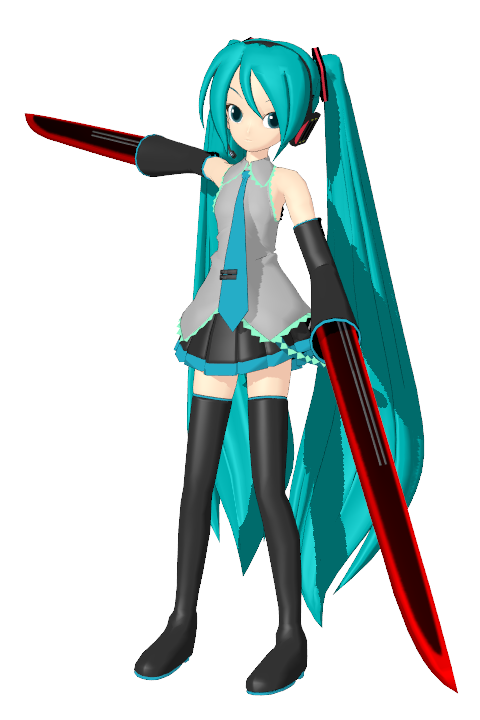
4th カテゴリーS のオリジナル・初音ミクのDNAを元に製造されたクローンのうちの一人。 製造ラインでのDNA欠損により、カテゴリーはB相当に留まる。 海から川に流れ着いたところをレンに拾われ、彼の家に上がり込むこととなった。 製造されたての状態で研究所から逃げ出したため、言語能力は低い。 しかし感情豊かであり、言葉の代わりに表情で喜怒哀楽を伝えることが得意。 何故かネギが好き。
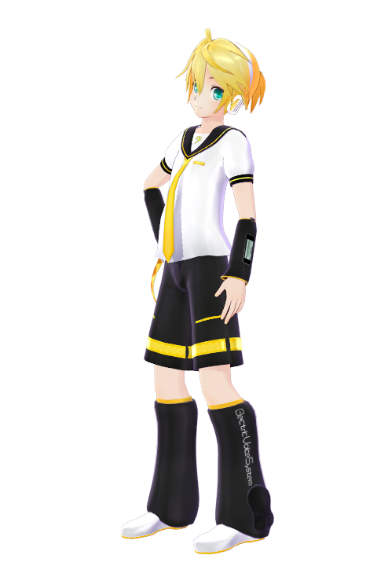
本作品の主人公。正義感が強く、困っている人間を放っておけない性格。 また、心配性なところがあり、リンやミクのことは特に気にかけている。 リベレーターとしての能力は無いものの、大切なものを守るためには、たとえ国家レベルの敵であっても立ち向かう気概の持ち主。
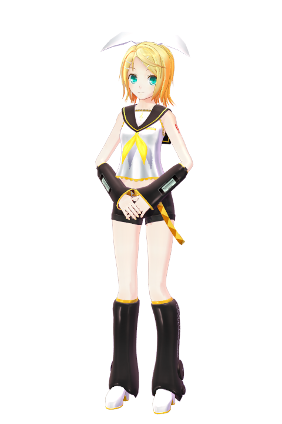
レンの同居人。やや控え目かつ冷静な性格であり、たまに正義感が暴走して無茶をするレンのストッパー的存在。 そのためレンに振り回されることが多いが、彼の性格には好意を抱いている。 家事全般が得意であり、特に料理は天下一品。
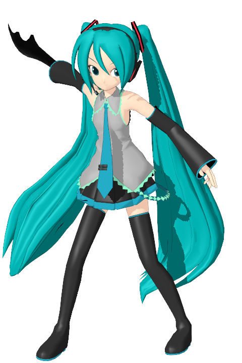
Code 39 をはじめとするクローンの元となった 4th カテゴリーS。 原子の配置を自在に変更することができる能力を持ち、空気の固体化や物体の形状変化など、戦法は多岐にわたる。 Code 39 と同様に感情豊かであるが、ややクールな印象。その強力な能力ゆえか好戦的なところがあり、特に同じカテゴリーS相手だと熱くなる一面も。 Code 39 と同様、何故かネギが好き。
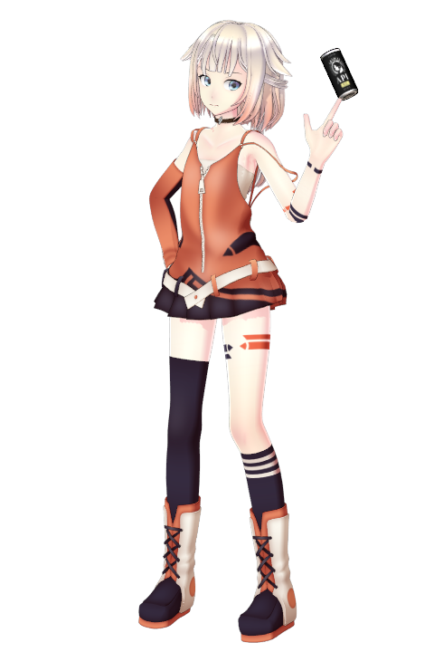
全リベレーターのトップ、1st リベレーターの少女。場を操る能力を持ち、多様なものを駆使して戦うため複合能力と見間違えるほど。 その多様さと強度故に周囲への影響も多大なものとなるので、普段は能力を抑え、使用時のみカフェインなどで活性化させている。 そのせいか、缶コーヒーが好き。 マイペースな性格で周りを振り回すこともあるが、複雑な能力を扱うため頭の回転が速く、レン達にとっては頼れるお姉さん的存在にもなる。
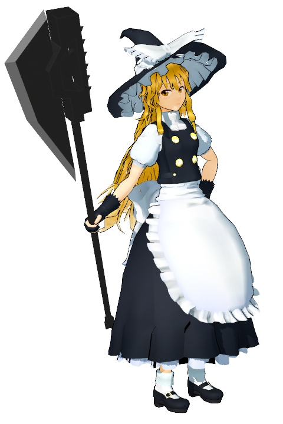
人間の尊厳と生活を守るために結成された、ハイペリオンリーダー格の一人。 地表から放射される赤外線を別の形態のエネルギーへと変換する能力を持つ。 言葉遣いは粗暴であるが、冷静かつ合理的な司令塔気質。
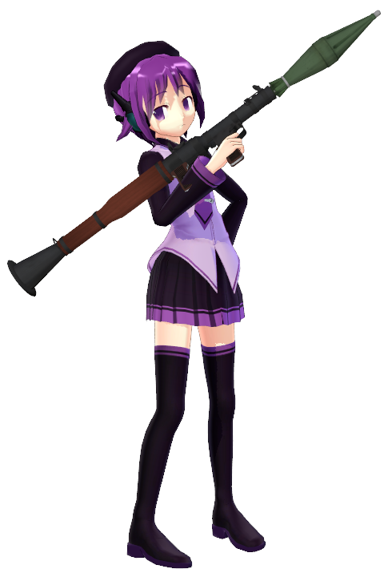
ハイペリオン構成員の一人。自分の目の赤外線感度を上昇させる、いわゆる暗視能力を持つ。 戦闘向けの能力では無いため、普段は拳銃や小銃、ロケットランチャーなどの個人用火器を用いて戦う。 面倒くさがりで机は汚いが、いざという時は冷静な判断で場を切り抜ける。
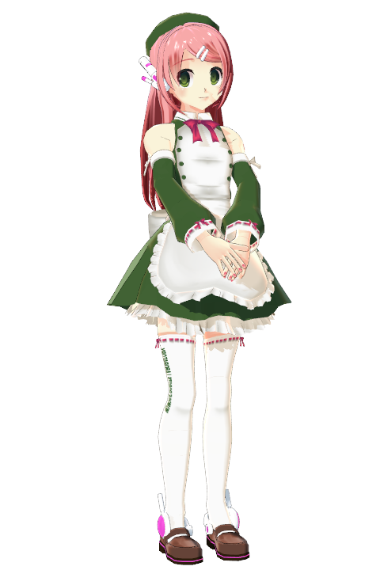
ハイペリオン構成員の一人で、デフォ子の相方的存在。体細胞の硬度を上げる能力を持つ。 面倒見の良い性格で穏やかな性格であるが、戦闘ではミサイルやヘリなど、大型兵器を駆使した派手な戦法を好む。
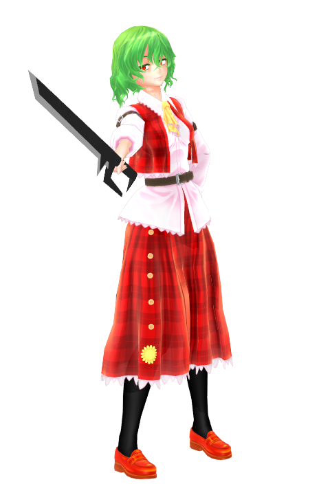
魔理沙と同じ、ハイペリオンリーダー格の一人。 太陽からの紫外線や可視光を別形態のエネルギーに変換する能力を持つ。 魔理沙以上に冷静沈着な性格であり、ガサツな魔理沙のお目付役的な存在。
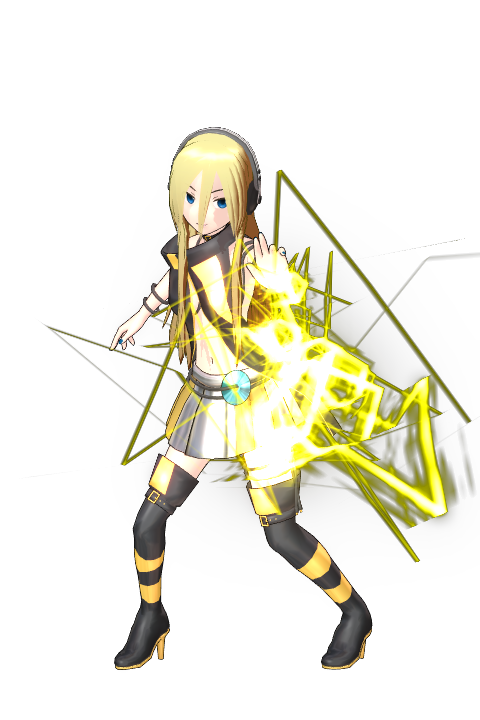
ハイペリオン構成員の一人。電場を操作する能力を持つ。 戦闘では能力も使うが、火力不足なことがあるため手榴弾などの火器も用いる。 お調子者な性格で、相方のゆかりをよく振り回している。
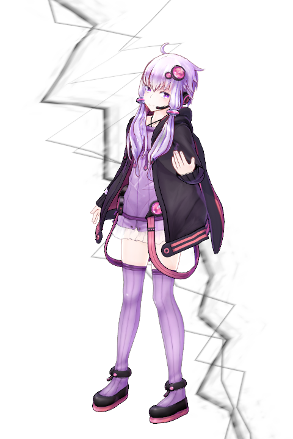
ハイペリオン構成員の一人で、Lilyの相方的存在。 地磁気に直接干渉して操ることが出来る。 戦闘では、電場を操るLilyの能力と組み合わせてレールガンなどの強力な攻撃をすることができる。 物静かな性格で、自由人なLilyによく付き合わされている。
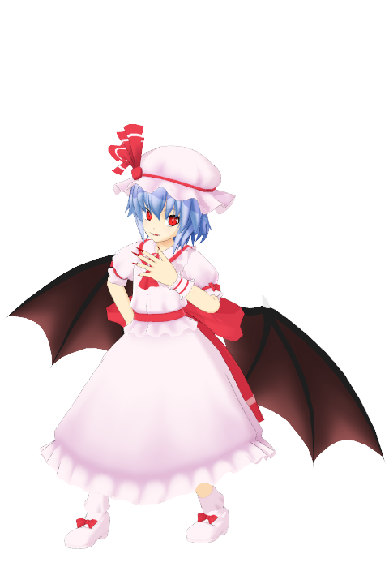
21st カテゴリーSで、物体の運動エネルギーを操作する能力を持つ。 初音ミクのクローン製造を受け持っていた研究所、スアロキンの元所長で、現在は大学で助教授を勤めている。 生物学含む科学への知見が深く、様々な分析をすることでよくレン達に協力している。 計画性が高く、人を扱うのにも長けている。
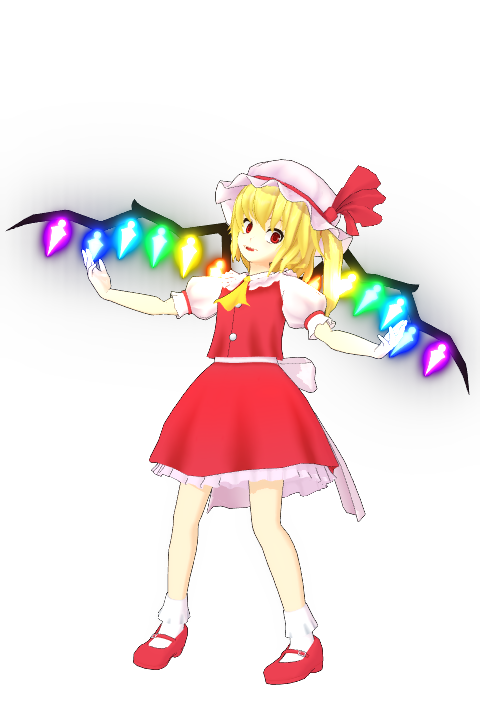
レミリアの妹。 22nd カテゴリーSで、可視光に対して一定以上の透過性を持つ物質を通過した光のエネルギーを操ることで、強力なレーザーを放つことが出来る。 その能力故か非常に好戦的であり、藤乃曰くレミリア以外はコントロール不可能。 しばしば破壊神と呼ばれる。
元スアロキンの研究員で、レミリアの助手的な存在。リベレーターではないものの、遺伝子工学を中心としたサイエンスへの知見は深い。 レミリアに対する忠誠心が強く、請け負った分析依頼の一部を任されている。 合理的かつ慎重な性格であり、時々暴走するスカーレット姉妹のブレーキ役も担う。
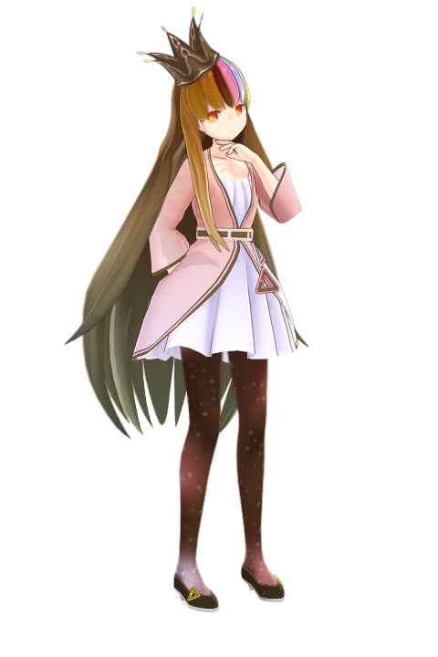
9th カテゴリーSであり、空間上の2点をワームホールで結ぶことでテレポートする能力を持つ。 元国防大臣であり、初音ミククローン製造の元凶。 しかし、そのような強行に及んだのは愛国心故であり、自分たちの国に危機が迫った時はレン達にも力を貸す。 無茶をすることもあるが、基本的には仲間思いな性格。
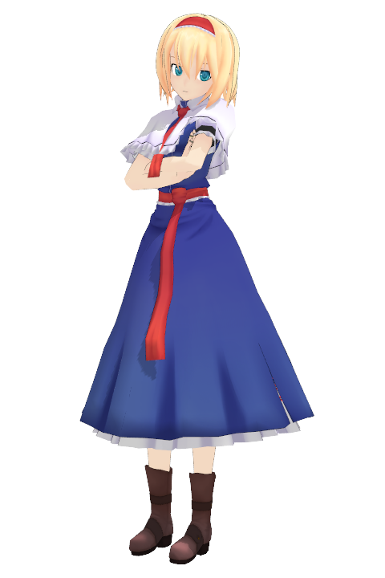
重力場を操作する能力を持つリベレーター。 元々は国防省を支持する政党の単なる一議員であり、ギャラ子の依頼でレン達を襲撃した。 しかし、事件の全責任を負い、自分たちへの飛び火を防いだギャラ子を無視できず、国防大臣解任後も彼女とともに行動している。 口数が少なくクールな印象ではあるが、共感性が高く、仲間と認めた人には手を貸す。
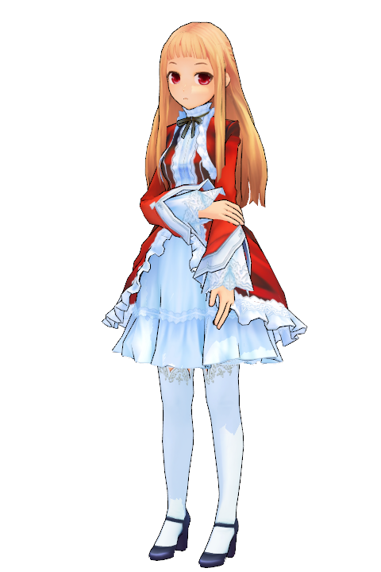
6th カテゴリーSであり、別の世界線の事象を自分のいる世界線に挿入することができる能力を持つ。 強力な能力ではあるものの、タイムパラドックスに対して非常に敏感であり、自分の世界線で規定以上のパラドックスを生み出しうる場合、能力を発動できない。 元フォルティア公国軍大尉であり、フォルティア公国の周辺状況を懸念した結果 Code 39 を誘拐して計画を推し進めようとした。 冷徹かつ合理的な性格であり、基本的に自分の利益にならない仕事を好まない。
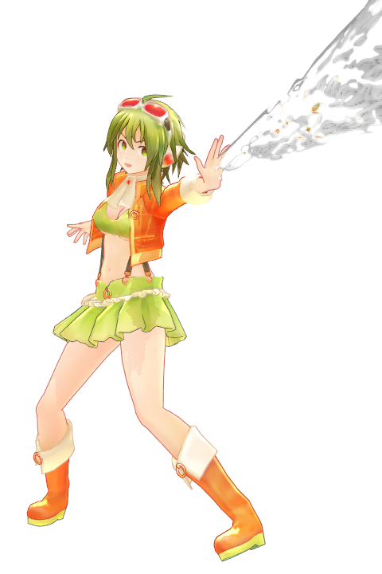
29th カテゴリーSで、大気密度を操作することで衝撃波を発生させる能力を持つ。 能力の汎用性は狭いものの火力が非常に高く、フランの振動励起(ジュエルフィルター)にも勝るといわれている。 その性格はまさに好戦的な戦闘狂であり、自分より高位のカテゴリーSや軍隊とも嬉々として戦う。 一方で義理人情に厚い一面があり、レア失脚後仕事をなくした時に拾ってくれた、友人のユフにはいつかその恩を返したいと思っている。
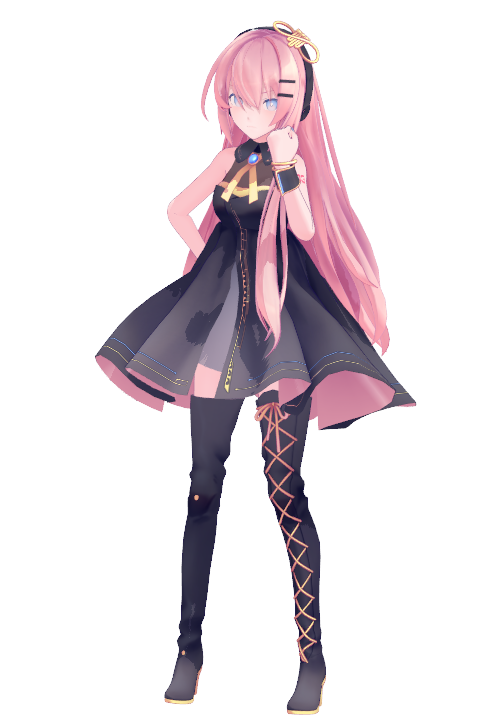
対象の脳回路を遮断し、能力を封じることができる 16th カテゴリーS。 フォルティア公国の研究者であるが、研究者に対する冷遇を繰り返す自国政府に対して不満を持っている。 その不満が積み重なったことで、Code Null を生み出す結果となった。 目的達成のためには手段を選ばない強引な一面をもつが、科学など自分の信じるものに対しては誠実な人物である。
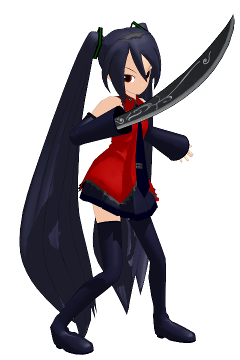
巡音ルカによって製造された、初音ミククローンの一人。 戦闘のみを目的で製造されたため、Code 39 ほど感情豊かではない。 平常時のカテゴリーはA相当である。 しかし、能力増強剤を用いて体内に埋め込まれた機械脳を活性化させることで、一時的にカテゴリーSを超えた存在、カテゴリーXと呼ばれる存在となる。 この行為は体に過度の負担をかけるため、短命である。 最低限の知識は脳にインストールされているため、Code 39 と比べて言語能力は高い。 初めはレンたちと敵対していたが、レンの優しさに触れることで心を開く。
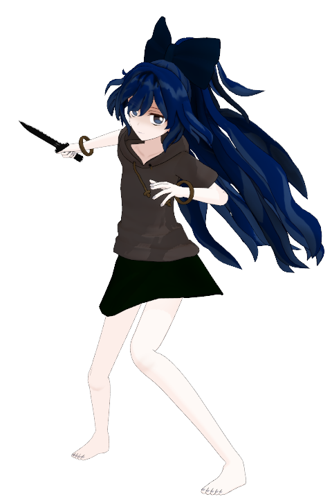
光学迷彩を駆使して戦う戦闘部隊、蟷螂部隊(オプティカルマンティス)の隊長。 能力によって自分の体の可視光に対する透過率を操作することができるため、自身は光学迷彩を用いない。 感情ベースで行動することがほとんどなく、自己の利益を重要視する性格。 そのため見合った報酬さえもらえるならば、どのような組織に対しても友好・敵対関係を問わず契約を結ぶ。
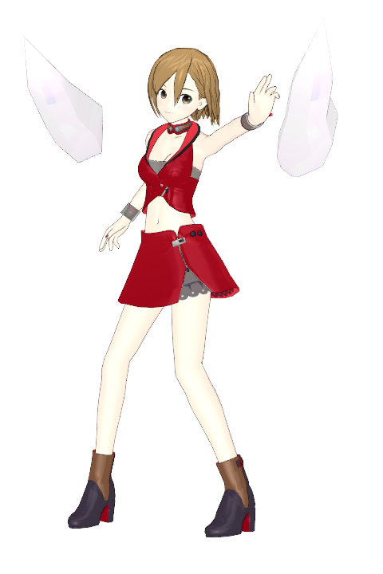
12nd カテゴリーSのリベレーターで、物質の波動性と粒子性の顕在性を操作する能力。 なぎさ電力に雇われたヒットマンであり、オリジナルとカモメ町で衝突した。 カテゴリーSのことを人類の中でイレギュラーな怪物であると考えており、「普通の生活」を送るリベレーターでない人間にある種のあこがれを抱いている。 戦闘狂など、癖の強いカテゴリーSの中では比較的常識人であり、日常生活ではあまり能力を使わない。
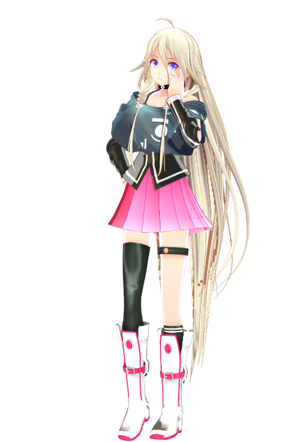
ONEの姉であり、リンとも交友がある。 かつて家を飛び出したONEの安否を案じていたが、フォルティア公国のミク誘拐事件をきっかけに再開した。 姉だけあってしっかりした性格であり、クローンであるゆえに人間として未熟なミクのことも気にかけている。
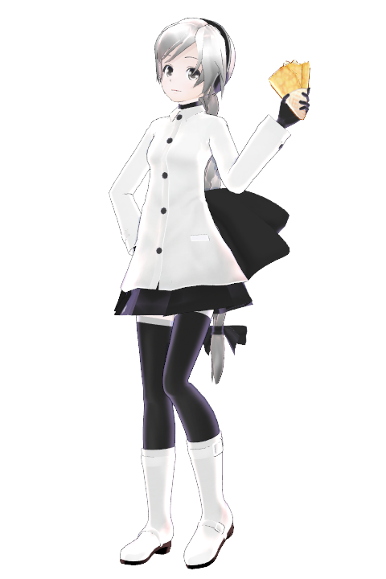
GUMIの旧友であり、とある公園でクレープのキッチンカーを営んでいる。 オリジナルとの衝突後、フォルティア公国要人の護衛としての仕事を失ったGUMIを雇う形で共同生活をしている。 友人は戦闘狂であるが、ユフ自身はおとなしい性格でありいざこざを好まない。 血の気が多いGUMIのお目付け役的存在。
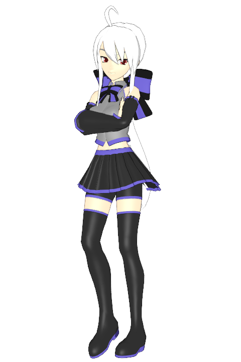
ガレキ町のバー、「カルーア」を営む女性。 ONEとは古くから交友があり、カルーアでもしばしば話し相手になっている。 曲者が多いバーの経営者という職業柄気が強く、破天荒なONEの行動にもそれほど驚くそぶりを見せない。 多くのツケがたまっているONEを一発殴ろうか迷っている。
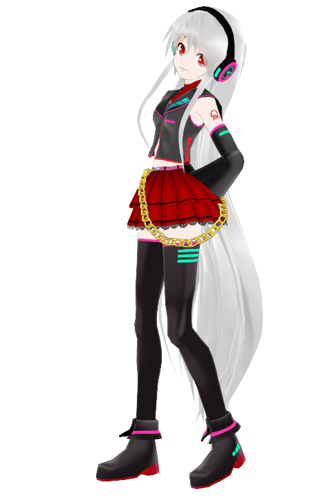
IAの友人。 聞き上手な性格であり、危なっかしい妹を心配するIAをよく気にかけている。 最近はIAがONEと頻繁に会うようになったため、ONEとも固有関係を持つようになった。